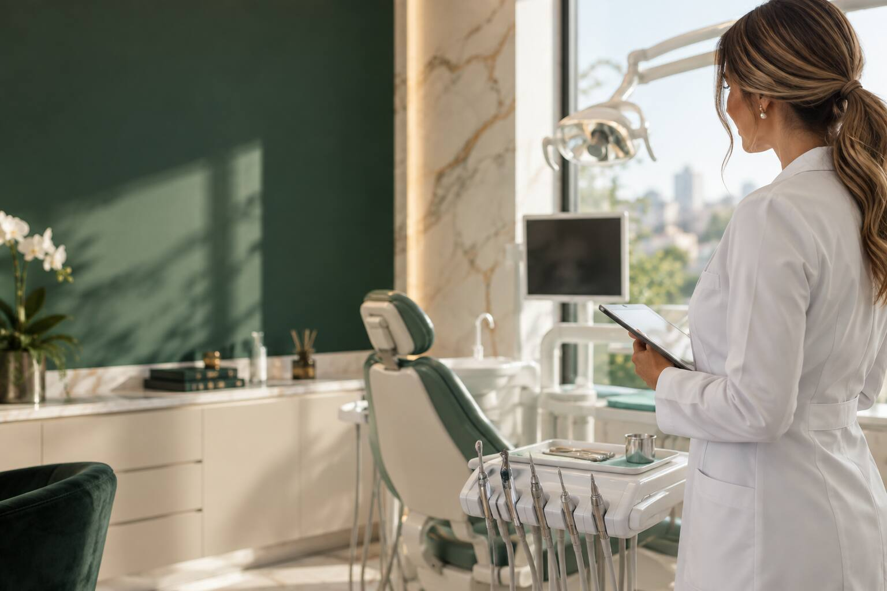

Estética do sorriso
Planejamento individual para um sorriso natural, equilibrado e compatível com você.
Quero saber mais →
Odontologia com cuidado e propósito
Atendimento acolhedor, planejamento individual e cuidado profissional para você se sentir seguro em cada etapa.
Cuidado que começa pela escuta
Sou Ana Carolina, cirurgiã-dentista. Acredito em uma odontologia próxima, clara e responsável — da primeira conversa ao acompanhamento de cada resultado.
Aqui, cada paciente é recebido com tempo, atenção e um plano de cuidado construído para suas necessidades.
Cuidado em cada fase
Informação clara, escuta e acompanhamento para decisões mais seguras sobre o seu sorriso.
Planejamento individual para um sorriso natural, equilibrado e compatível com você.
Quero saber mais →Acompanhamento atento para preservar sua saúde bucal em todas as fases da vida.
Quero saber mais →Uma consulta cuidadosa para entender suas necessidades e indicar o melhor caminho.
Quero saber mais →Simples e acolhedor
Preencha o formulário com seus dados e o motivo do contato.
Nossa equipe retorna para combinar a disponibilidade.
Converse com a doutora e receba uma orientação individual.
Comece por uma conversa
Envie seus dados e entraremos em contato para organizar sua avaliação.